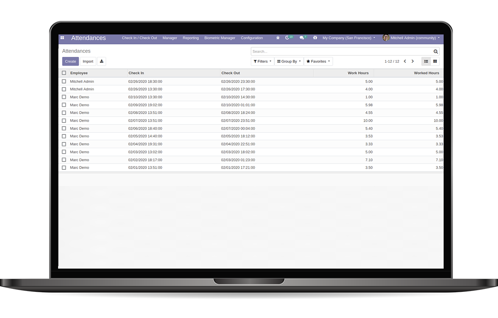
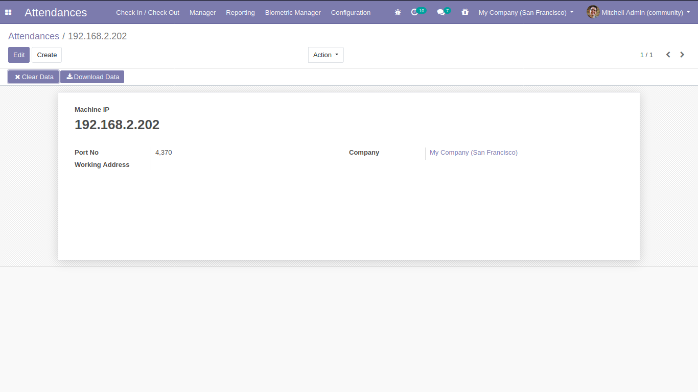
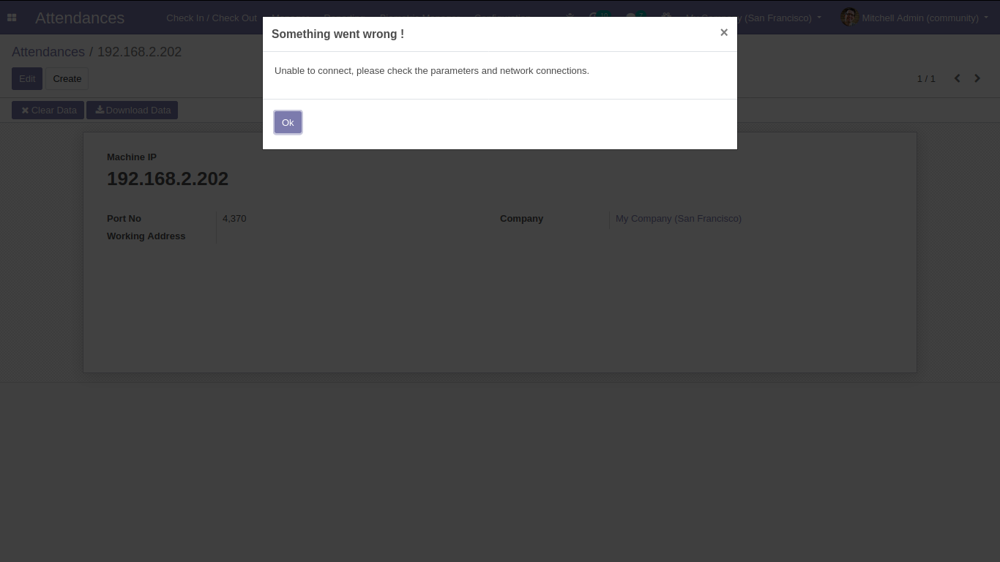
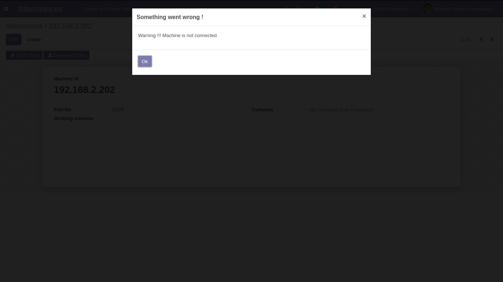
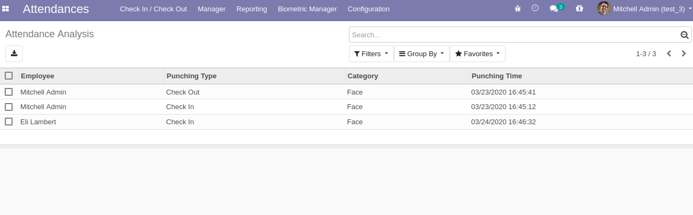
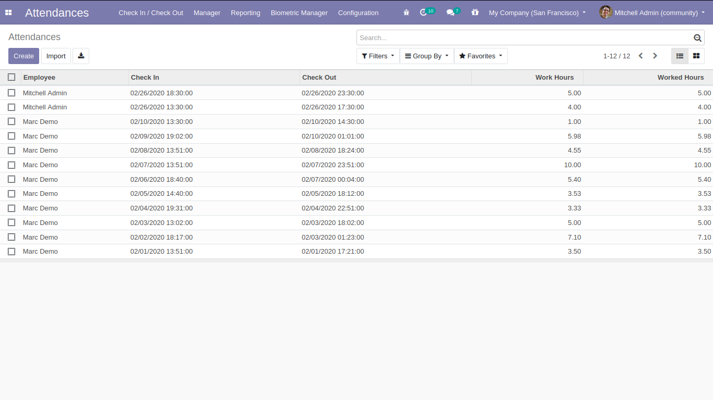
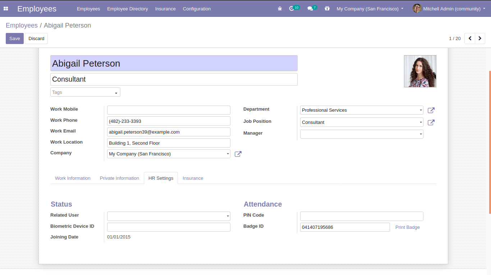

Seamless Integration of Biometric Devices with HR Attendance System
This module provides seamless integration between biometric devices and Odoo's HR attendance system. It automates attendance tracking by connecting directly with biometric devices, eliminating manual data entry and reducing human error.
Configure your devices with IP address and port number for seamless connection.
Download attendance logs directly from the device into Odoo. System provides clear feedback on connection status.
Manage attendance logs with option to clear data from both device and Odoo system.
View comprehensive attendance logs from all connected devices.
Automatic generation of HR attendance records from device data.
Link employees with their biometric device IDs. System automatically creates employee records if they don't exist.
